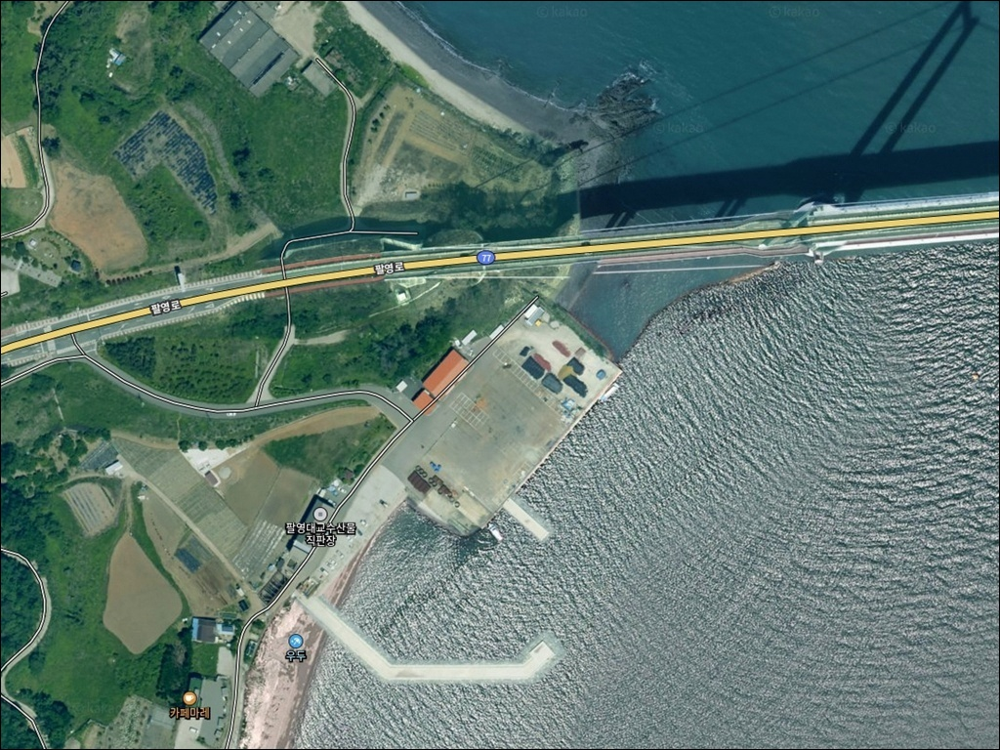
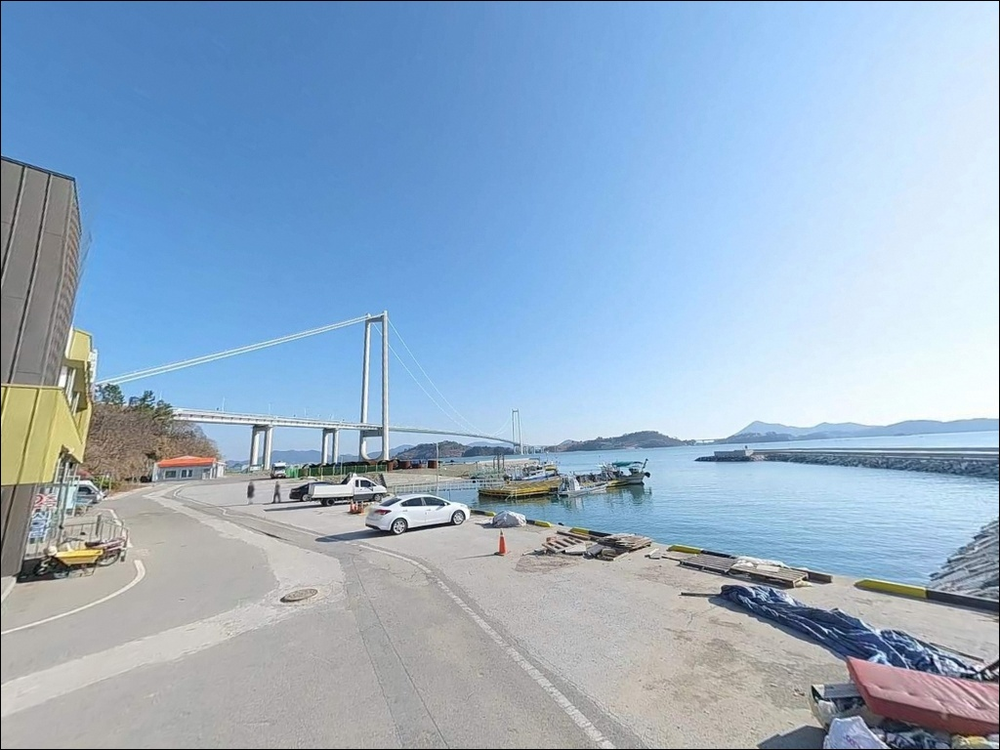
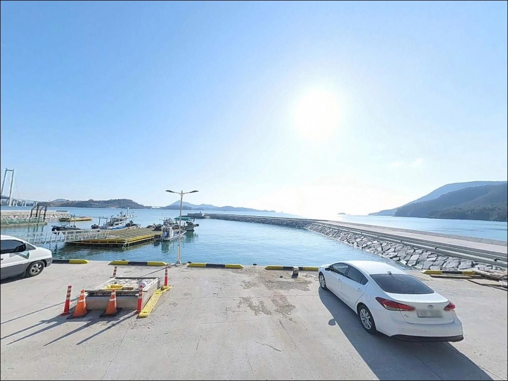
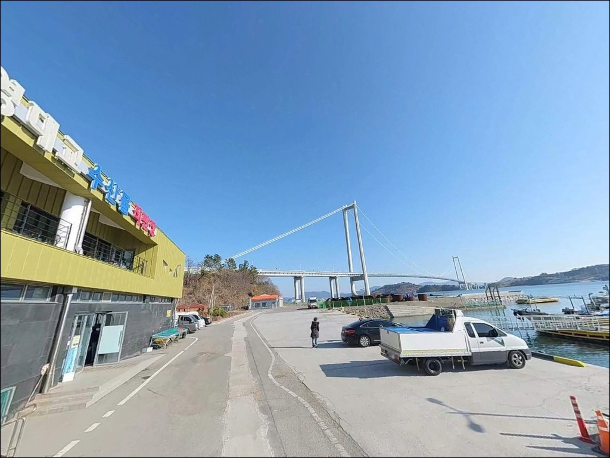
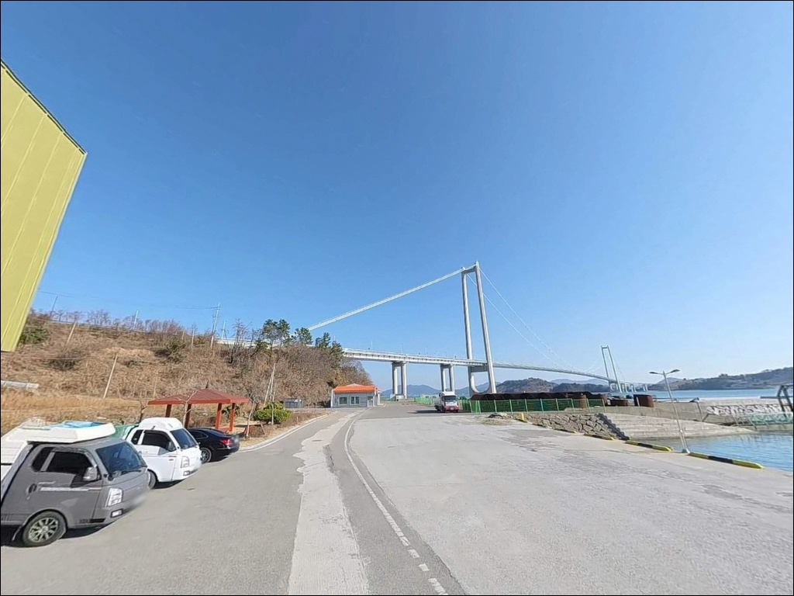
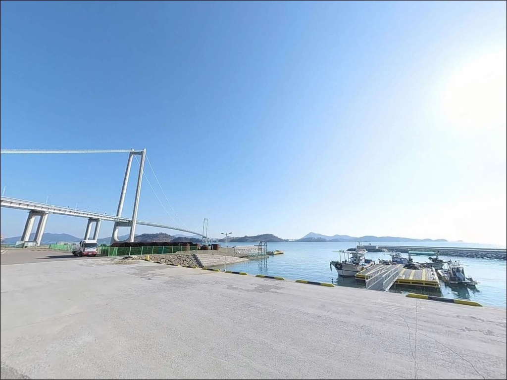
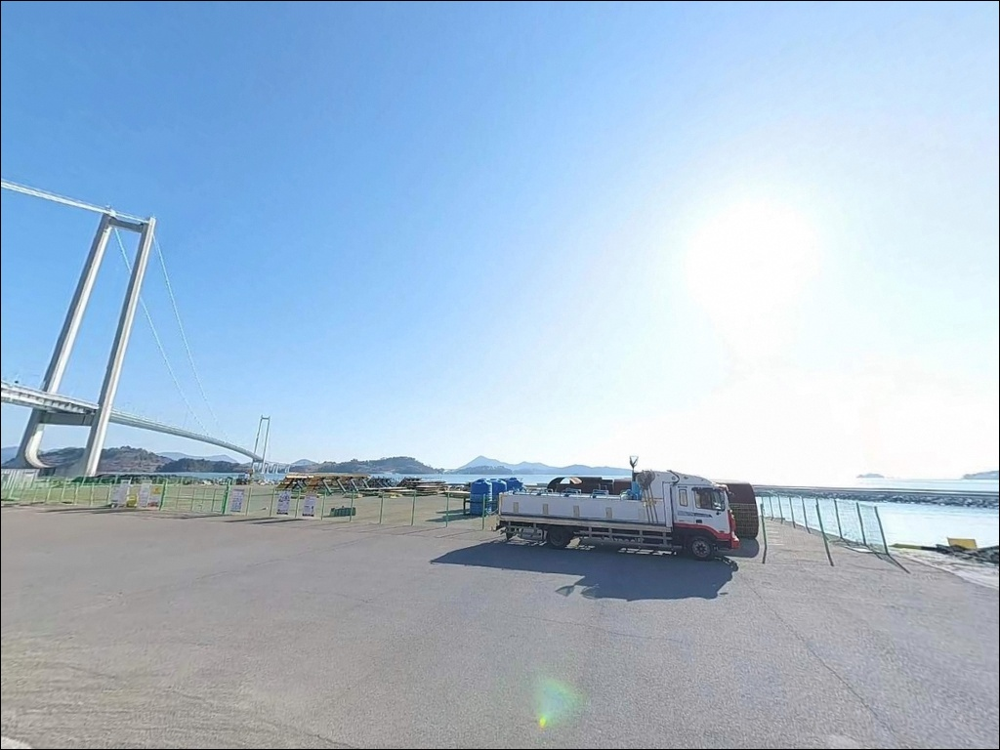
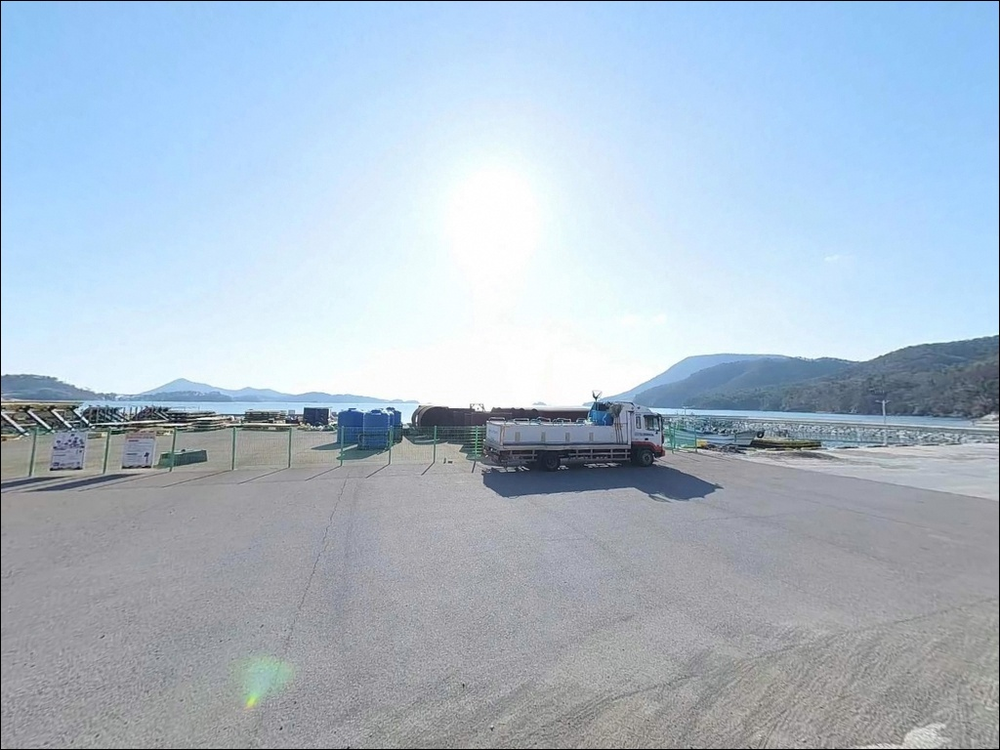
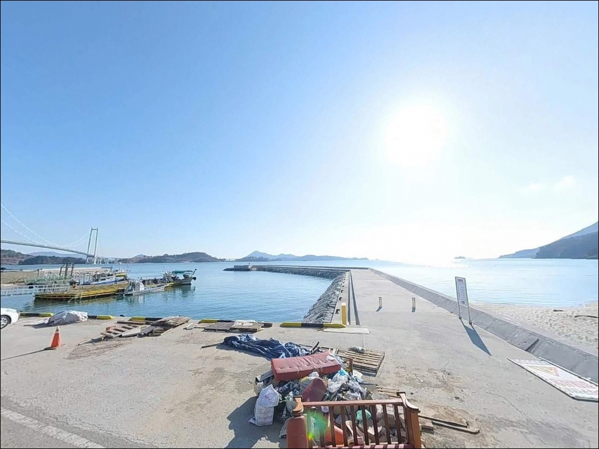

고흥 우두해수욕장, 팔영대교 교각 사석 주변에서 갈린 원투와 루어 반응
이 페이지에는 광고(제휴 링크 포함)가 있으며, 광고 링크를 통해 구매하면 운영자가 판매 수익 또는 수수료를 받을 수 있습니다. 포인트 사진: 카카오맵 스카이뷰·로드뷰. 이 페이지의 지도·사진 이미지는 카카오맵의 실제 서비스 이미지와 다를 수 있습니다.


포인트 안내
우두해수욕장
전남 고흥군 영남면 우천리 250-7
종점 구조의 해변이라는 이유로
지나치기 쉬운 곳이지만,
팔영대교 교각 주변의 와류 구간과
갯바위 경계선은 낚시 포인트로서
원투와 루어를 동시에 운용하기
좋은 조건을 갖추고 있습니다.
이 글은 우두해수욕장의
진입 환경, 차박 여건, 지형 기반 낚시 분석,
낚시 스타일별 접근 방법에 집중합니다.
조황 단정이나 특정 어종 보장은
이 글의 범위에 포함되지 않습니다.

1. 진입 동선과 포인트 접근성
우두해수욕장은 팔영대교에서
고흥 방향으로 빠져나온 뒤
우천우두길을 따라 해변 방향으로 내려가면 닿는 곳입니다.
도로 전 구간이 시멘트 포장으로 정비되어 있으며
경사 없이 평탄하게 이어지므로
일반 승용차나 소형 SUV 기준으로
진입에 큰 어려움은 없습니다.
다만 마지막 구간은 왕복 1차선 수준의
좁은 농어촌 소형 도로입니다.
초행이라면 네비게이션을 그대로 따라가는 편이 낫고,
길이 맞나 싶은 느낌이 드는 구간이
나오더라도 끝까지 진행하면 해변에 도달합니다.
해수욕장 전체가 막다른 길(종점) 구조이므로
해변 접속부에서 회차해야 합니다.
승용차와 소형 SUV는 회차 가능한 여지가 있으나
중형 캠핑카나 카라반은 회차가 어려운 구조입니다.
주차는 해변 진입부 소형 공터(차량 2~3대 수준)와
우천우두길 종점부 갓길 일부를 활용하는 방식이 현실적입니다.

2. 차박 환경과 야간 체류 여건
우두해수욕장은 실제로 노지 차박에
활용된 기록이 있는 해변입니다.
해변 뒤편과 갯바위 인근 평탄 공간에서
소형 차량 기준으로
바다를 바라보며 정차·체류하는 형태가
가능한 구조입니다.
야간에는 팔영대교 교량 조명이
해수면 일부를 비추는 정도이며,
해변 자체는 어두운 편입니다.
개인 랜턴과 고정 조명은 필수이고,
우천마을 인근 민가가 가깝지 않아
프라이버시 여건은 양호한 수준입니다.
팔영대교를 지나는 차량 통행 소음이
간헐적으로 들릴 수 있으나
해변 자체로 오가는 차량은 거의 없습니다.
북서풍 계통 바람이 해협 구조를 통해
가속되는 경향이 있으므로
기상 예보를 미리 확인하고 체류 여부를 판단하는 편이 좋습니다.


3. 주변 편의시설 및 인프라 현황
우두해수욕장 반경 3km 이내에
확정할 수 있는 편의점이나 식당 정보는 없습니다.
영남면 소재지(신촌리) 방향에 소형 매점이
있는 것으로 알려져 있으나
운영 여부가 불분명하므로
출발 전 완전 자급 체제로 준비하는 것이
현실적입니다.
고흥 읍내까지는 약 25km 거리로
마트와 주유소, 병원 이용이 가능합니다.
10km 권내에는 남열해돋이해수욕장이 있으며
해당 해수욕장에는 주차장과 공중화장실이
갖춰져 있어
부족한 물자는 이동 전 확보하는 편이 효율적입니다.
우두해수욕장 자체에 화장실 등
편의시설이 설치되어 있다는 확정 정보가 없으므로
현장 의존은 금물입니다.
식수, 비상약품, 낚시 소품 전부를
출발 전에 갖추는 것이 기본입니다.

4. 진입 전 반드시 챙겨야 할 준비사항
우두해수욕장은 수산자원보호구역 내에
위치한 해변입니다.
방문 전 고흥군청 또는 관할 기관에
포획 금지 어종·체장 이하 어류 방류 기준을
먼저 확인하는 것이 최우선 준비 사항입니다.
규정 미확인 상태의 무분별한 채집은
문제가 될 수 있습니다.
팔영대교 인근 해협 구조 특성상
바람이 가속되는 경우가 있습니다.
출조 당일 기상청 해상예보를 반드시 확인하고,
강풍 예보가 있는 날은 진입 자체를
재검토하는 편이 안전합니다.
물때도 포인트 여건을 좌우하는 핵심 변수로,
바다타임 기준 영남면 우천리 물때를 먼저 확인하고 출발합니다.
야간 낚시라면 헤드랜턴과 고정 조명을 각각 준비하고
구명조끼는 갯바위 구간과 해변 모두에서
상시 착용이 기본입니다.
여분 채비는 갯바위 구간 특성상
밑걸림 손실을 감안해 넉넉히 가져가는 편이 좋습니다.

5. 지형 기반 낚시 여건 분석
우두해수욕장은 길이 약 500m, 폭 약 30m의
소형 모래사장을 중심으로
해변 양쪽 끝단에 갯바위 구간이
형성된 혼합 지형입니다.
모래사장 구간과 갯바위 경계선은
서로 다른 낚시 방식을 동시에 운용할 수 있는
복합 포인트 구조를 만들어냅니다.
팔영대교 교각이 해수면을 직접 관통하는 위치이므로
교각 주변에 와류 구간과 조류 변화 지점이 형성됩니다.
교각 기초부 주변의 사석 구조물이
어류의 은신처 역할을 하며,
이 경계 구간이 이 포인트에서
가장 기대해 볼 만한 핵심 포인트 자리입니다.
해변 전면은 사질 바닥으로 경사가 완만한 편이고,
갯벌이 일부 노출되는 구간도 있어
조석 간만 차에 따라 지형 노출 범위가 달라집니다.
들물 시에는 수심이 올라오면서
어군이 해변 가까이 접근하는 패턴을
이 해역에서 기대해볼 수 있습니다.
출조 전에 고흥 영남면 일대 최신 조황을 꼭 검색해 보시기 바랍니다.


6. 우두해수욕장에서 조과 차이를 만드는 낚시 방식
원투낚시는 모래사장 전 구간에서
운용할 수 있는 기본 방식입니다.
사질 바닥 특성에 맞게
청갯지렁이 미끼로 정면 캐스팅을 기반으로 하며,
붕장어는 야간에 활성이 높아지는
이 일대 해역의 패턴입니다.
간조보다 들물 시 해변 가까이 어군이 붙는 구조이므로
물때 타이밍을 맞추는 것이 원투 운용의 기본입니다.
루어낚시는 팔영대교 교각 주변 사석 지대를
중심으로 접근합니다.
소프트베이트 계열 지그헤드 리그로
교각 구조물 가까이 캐스팅하면
볼락, 노래미 계열이 이 일대 해역에서
기대해볼 수 있는 어종입니다.
야간에는 조명 경계선 부근을 천천히 탐색하는
방식이 어울립니다.
에깅은 봄부터 초여름 시즌에
교각 주변 조류 변화 지점을
노리는 방식으로 접근합니다.
갑오징어가 이 일대 해역 전반에서
확인되는 패턴이 있으며,
조류가 적당히 흐르는 물때 타이밍에
교각 그림자 경계선을 따라 에기를 흘리는 운용이
유효합니다.

7. 대안 포인트와 플랜 B 동선
우두해수욕장의 주차 공간이 부족하거나
조류 여건이 맞지 않는 날이라면
팔영대교 교각부 도보 접근 포인트가
첫 번째 대안입니다.
해변에서 걸어서 접근할 수 있는
교각 주변 사석 구간은
물때만 맞으면 루어 조과를
기대해볼 수 있는 지형입니다.
차량을 이동할 여건이 된다면
영남면에서 가장 알려진 낚시 포인트인
영남 용바위(약 8~10km)를 대안으로 삼을 수 있습니다.
기암절벽 갯바위 구간으로
갯바위낚시가 가능한 지형이며,
진입 시 미끄럼 방지 장비를
반드시 갖춰야 합니다.
차박 위주로 이동 대안이 필요하다면
남열해돋이해수욕장(약 8~10km)이
안정적인 선택입니다.
주차장 300면이 확인되어 있고
공중화장실도 갖춰져 있으며,
갯바위 인접 구간에서 낚시도
함께 운용할 수 있습니다.

덜 알려진 해변일수록
지형 판단이 먼저입니다
원투낚시를 기본으로 두면서
루어나 에깅을 병행하고 싶은 낚시인이라면
우두해수욕장의 복합 지형 구조가
잘 맞는 조건입니다.
팔영대교 교각 주변 조류 변화 지점과
갯바위 경계선은
한 자리에서 다양한 방식을 시험해볼 수 있는
구조를 갖추고 있습니다.
반면 주차 공간이 제한적이고
편의시설을 기대하기 어려운 종점형 해변이므로
완전 자급 준비와 위성지도 사전 확인 없이
방문하면 도착 전부터 막힐 수 있습니다.
수산자원보호구역 규정 확인, 물때 파악,
진입로 사전 점검이 방문 성패를 가르는
세 가지 기준입니다.
조용한 해변에서 바다를 마주하며
하룻밤 머무는 차박 여행자라면,
팔영대교 야경을 옆에 두고
낚시와 차박을 조용히 즐기기 좋은 현장입니다.